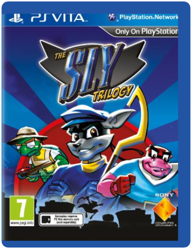
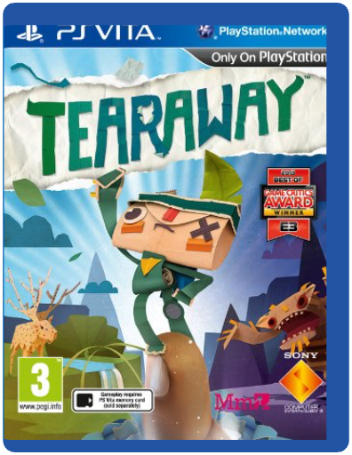
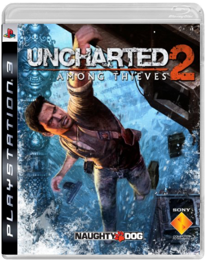
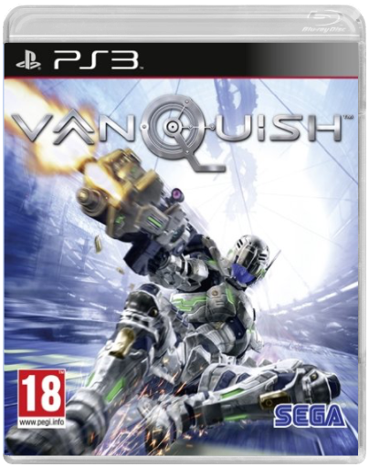
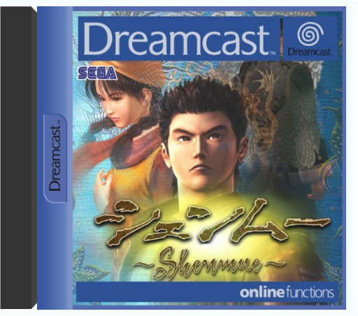

Sly TrilogySony Computer Entertainment THE WORLD'S SNEAKIEST THIEF IS BACK
Test your sneaking skills with the wise-cracking, ring-tailed rapscallion Sly Raccoon as the masked mammal pulls together the old gang to relive some of their greatest ever heists in Sly Trilogy Collection PS Vita Game.
A hit on both PlayStation2 and PlayStation3, this action-adventure trilogy now offers plenty of tricky fun on the run on PlayStation Vita, so you can join Sly's gang wherever you are, and whenever you like.
Guide Sly on a host of daring assignments across the world in the search for valuable artifacts as you scamper through the shadows, outwit security guards and give cops the slip in classic Sly Raccoon style.
Just don't set off any alarm bells! All three classic Sly Cooper Games available to play on PS VitaUnique cel-shaded visual style and a storyline inspired by film noir and comic booksPlayStation Vita Functionality Including Touchscreen and Dual Analogue ControlsStealth, thievery, platform adventure, combat, strategy and exploration with hours of gameplay across three whole games. TearawaySony Computer Entertainment Please Note: PlayStation Vita titles are not compatible with standard Sony PSP consoles
Embark on your own unique adventure through a papercraft world that you can hold in the palm of your hand.
Tearaway™ is the next creative masterpiece from Media Molecule, the critically acclaimed developer behind the award winning LittleBigPlanet™ franchise. Inspired by and created specifically for PS Vita, the tactile world of Tearaway is a beautifully crafted 3D open environment built completely out of paper that behaves with the real world physics of actual paper.
Tearaway is a “buddy-movie” style adventure, between the you and a papercraft messenger from another dimension IOTA (or alternatively ATOI). The Messenger is controlled with the PS Vita’s sticks and face-buttons, but whenever they need some more dramatic help, you player can reach into the PS Vita and effect the papery-world, sometimes in tactile creative ways and sometimes in dramatically destructive methods. Your surroundings can appear in-game through the use of the PS Vita’s cameraThe PS Vita’s microphone will allow you to breathe storms and wield the voice of god into the paper land.Players will also see their own fingertips push up into the environment to come to their messenger’s aid via rear touch, or unfold areas of scenery with the front touch. Uncharted 2: Among ThievesSony Computer Entertainment Spielberg might have strapped our generation's foremost action icon into a fridge and nuked him to a land beyond credibility, but it matters not a jot. We've got a new matinee idol, his demeanour as charismatic as any of cinema's leading men and his adven VanquishSEGA Directed by Shinji Mikami, the creator of the Resident Evil series, VANQUISH is a sci-fi shooter of epic proportions with a fast, fluid and frenetic combat system, and an engaging and immersive storyline.
The story takes place on a vast space station in a near future world where nations war over the planet’s remaining energy resources. Against this backdrop, players take the role of Sam Gideon, a government agent kitted out with a futuristic battle suit. A versatile fighter with a huge arsenal of weaponry at his disposal, Sam also has an array of martial arts skills that he can use to take down his robot enemies.
Fast, fluid and frenetic - This is gaming at its most explosive and exciting, as you storm into battleExperience a game character like no other - Sam is the ultimate weapon, donning a futuristic battle suit of destructive firepower and superhuman speed and agilityWage war in space - Fight your way through the enormous, open environments of the space station. The most advanced, futuristic city in the skies becomes home to the actionGenre breaker - Taking the shooter genre to the next level by adding unique offensive and defensive moves, and kinetic melee combatChallenge and competition - VANQUISH will rate players on a variety of statistics, rewarding them for quick reflexes and strategic thinking, ensuring they will want to play the levels again ShenmueSega With an epic story line, luscious graphics and gameplay to match, Shenmue is everything than the Dreamcast can produce and more.
Ever since the launch of the Dreamcast, Sega have been looking for a decent RPG to bolster the range of titles available and to reply to the popularity of the final fantasy series on the PlayStation.
The main character of Shenmue is Ryo Hazuki, a hard-working college student who has been knocked sideways by the death of his father and swears vengeance as he sets off in search of the killers.
Although the story sounds familiar, Shenmue differs through its execution. Everything from the finely tuned opening sequence to the interactivity with the 500 or so characters is nothing short of superb.
But beware, this is no pick-and-play game. Shenmue comes on three packed discs, with a further disc for extra features and Internet options allowing the game to boast over 250 hours of gameplay. Couple this with the rumours that this is, in fact, part one of a trilogy and you've got an epic on your hands.
The game boasts distinctive time settings: different things happen during the day and night. Knock on someone's door during the day and they are likely to be out; visit the local shop in the evening you'll probably find it closed.
But it's not all talking to old people and children in an attempt to find the bad guys. Shenmue offers the chance to get into fights, race a motor bike and interact with everything and anything.
This game is a slow-burner, rising to an epic crescendo at the end. It's notCrazy Taxi or Resident Evil but something far greater, something almost compelling so that, although you know you're going to do a lot of walking around searching, you can't help but blindly carry on. —Stuart Miles |

 Made with Delicious Library
Made with Delicious Library